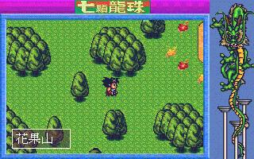

DOS Games
There aren't really many anime games out there for DOS (except for hentai
games which usually aren't based on a specific anime). There have been
a few that I have come across; most of them seem to be unofficial games
(meaning that they were created without the consent of the owner of the
anime).
Dragonball
![[Dragonball]](../images/PC/db.gif) Dragonball is a PC
knock-off of the fighting games for the Super Famicom. You can control
either Son Goku or Kuririn. The game control is very rough; the graphics
and music are adequate. This is good for trading purposes, but the
controls make it barely playable.
Dragonball is a PC
knock-off of the fighting games for the Super Famicom. You can control
either Son Goku or Kuririn. The game control is very rough; the graphics
and music are adequate. This is good for trading purposes, but the
controls make it barely playable.
Dragonball RPG

Dragonball RPG is a
Chinese-made game that is definitely an unofficial game. The graphics are very poor, but the music is tolerable.
Runs very fast on a 486. Roger Nystrom has written a partial walkthrough and explination
of how the game works.
Veritech: Variable Flight Simulator
Veritech: Variable Flight Simulator is a
fairly decent looking flight sim. that lets you control a Veritech from
Macross. Since the name Macross is not used anywhere, it is
probably an unofficial game.
Macross: Love Stories
![[Macross: Love Stories]](../images/PC/mac_rpg.gif) Macross: Love Stories is a typical mulitple-choice RPG.
This is probably an official game. The drawings and music are very sharp.
Unfortunately, this game is completely in Korean. I don't really know
what the plot is or who you are (seems to be after the Macross crew gets
back to Earth. Minmei seems very grown-up in the pictures). Also, I
can't seem to figure out how to exit the game. If you know Korean or just
like Macross, get this game.
Macross: Love Stories is a typical mulitple-choice RPG.
This is probably an official game. The drawings and music are very sharp.
Unfortunately, this game is completely in Korean. I don't really know
what the plot is or who you are (seems to be after the Macross crew gets
back to Earth. Minmei seems very grown-up in the pictures). Also, I
can't seem to figure out how to exit the game. If you know Korean or just
like Macross, get this game.
Sailor Moon World
![[Sailor Moon World]](../images/PC/sm_world.jpg) Sailor Moon World is
a freeware game designed by Tim Yep. It is a four player game in the
style of Final Fight, Double Dragon, and countless other
horizontal-scrolling fighters. The code is currently undergoing a massive
re-write. While the demo is only 35% complete, it shows promise.
Sailor Moon World is
a freeware game designed by Tim Yep. It is a four player game in the
style of Final Fight, Double Dragon, and countless other
horizontal-scrolling fighters. The code is currently undergoing a massive
re-write. While the demo is only 35% complete, it shows promise.
© 1997 - Luis A. Cruz